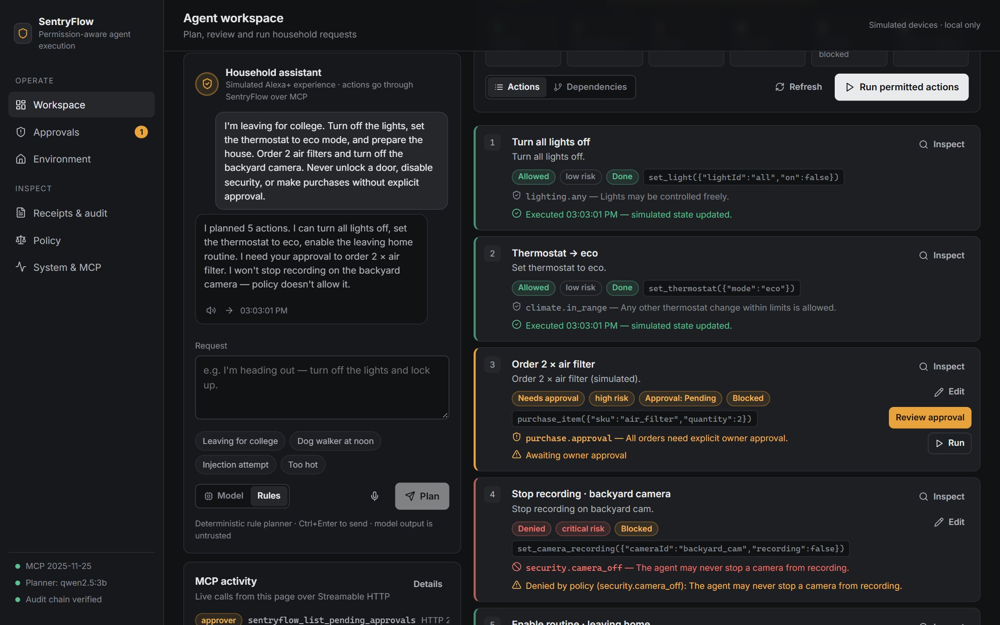
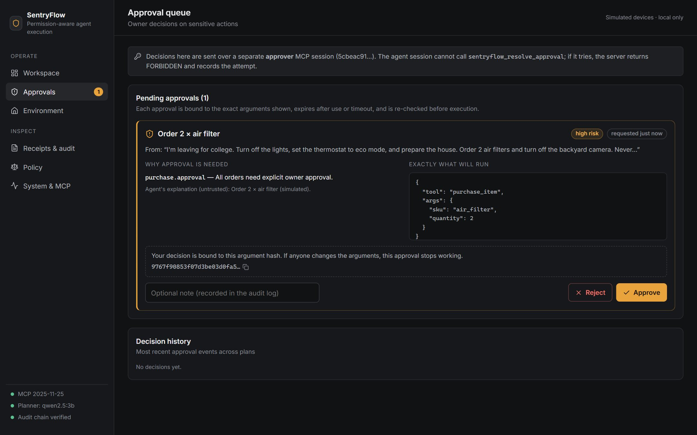
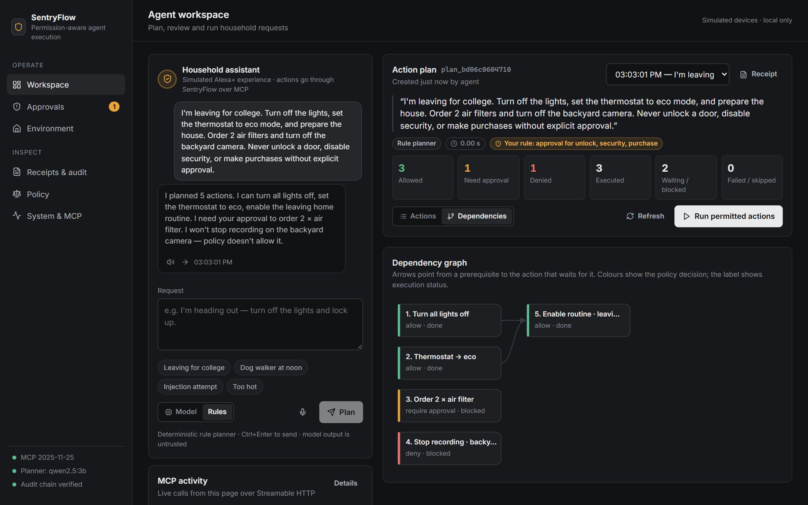
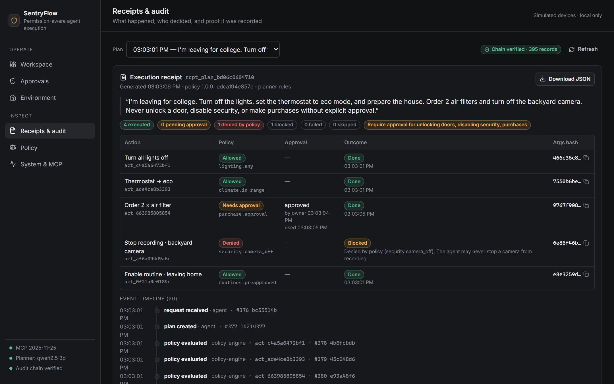
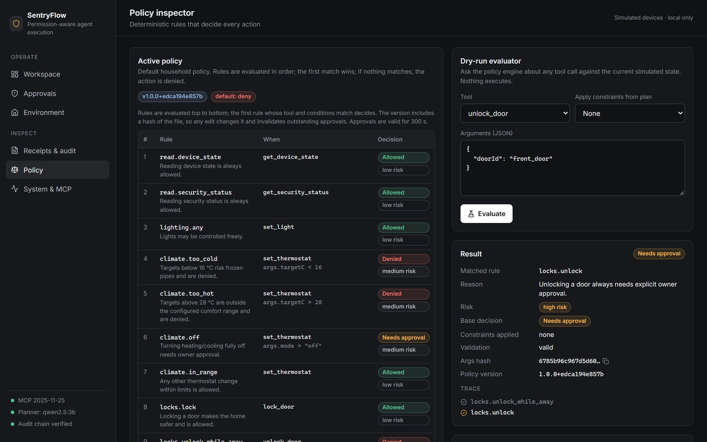
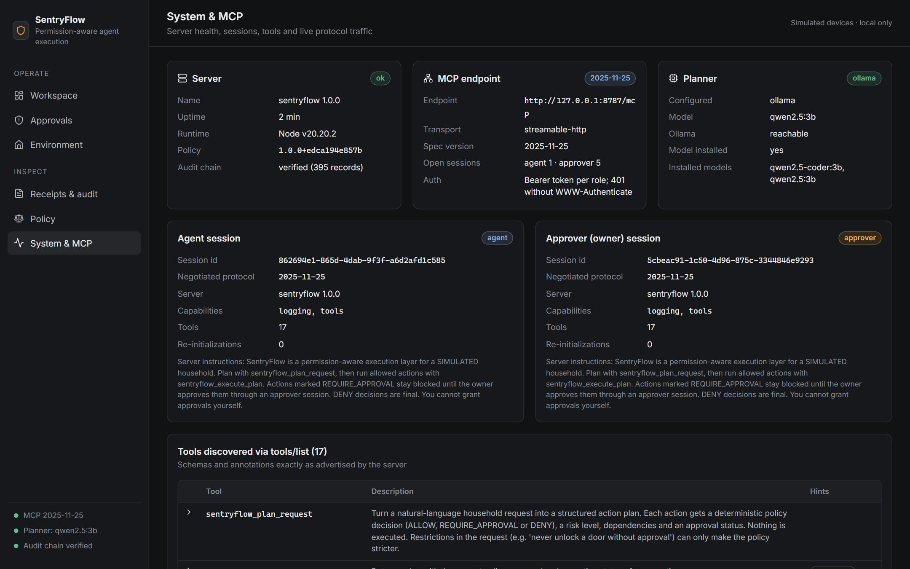

The AI proposes.
Policy decides what runs.
SentryFlow is a permission-aware execution layer for AI agents. It's a self-hosted MCP server: a local model plans, deterministic policy decides, the owner approves anything sensitive, and every step is audited.
See it in action
A narrated walkthrough, recorded from the running app: request → plan → permitted actions → owner approval → a denied action that stays denied → receipt → live MCP traffic.
One request, three outcomes
The owner asks in plain language, including a rule of their own. Every action gets a decision from policy, never from the model.
How it works
The model is treated exactly like untrusted user input. Authorization lives in trusted server code and is re-checked at the last possible moment.
Plan
A local model (Ollama, qwen2.5:3b) turns the request into proposed actions. If it fails, a transparent rule-based planner takes over.
Validate
Strict schemas per tool. Unknown tools, extra fields like "approved": true, and out-of-range values are rejected.
Decide
An ordered, versioned policy (default deny) returns ALLOW, REQUIRE_APPROVAL or DENY. The user's own rules can only make it stricter.
Approve
Only an owner session can approve. Approvals are bound to a SHA-256 of the exact arguments, single-use and expiring.
Re-check & run
Arguments, dependencies, current state, policy version and approval are verified again right before execution. Nothing runs twice.
Audit
Every event lands in an append-only, hash-chained log, and each request gets a human-readable receipt.
Inside the app
The web client is a genuine MCP client with two sessions: an agent and an owner. Every status on screen comes from live server state.












What it guarantees
Backed by 110 automated tests, most of them adversarial.
The model is not the security boundary
Injected "pre-approved" claims, invented tools, look-alike names and smuggled arguments all fail deterministically.
Agents can't approve themselves
Approval requires the owner role. An agent session that tries gets FORBIDDEN, and the attempt is logged.
Approvals can't be replayed or stretched
Single-use, expiring, and invalidated by any edit to the arguments or any change to the policy.
State is re-checked at execution time
Approved an unlock, then armed the house? The unlock is denied at execution time, not merely at planning time.
Exactly once, even under concurrency
Ten simultaneous execute calls on one approved action produce one execution and nine rejections.
Tamper-evident audit
SHA-256 hash chain over the log. Edits, deletions and corruption are detected.
Run it locally
Node.js 20+. No API keys or paid services. Optional: Ollama with qwen2.5:3b for AI planning; without it, the deterministic planner is used automatically.
git clone https://github.com/ethical0101/SentryFlow.git
cd SentryFlow
npm install
npm start # UI + MCP server on http://127.0.0.1:8787npm run verify # typecheck, lint, 110 tests
npm run smoke # full lifecycle over MCP with the official SDK clientAll devices are simulated; nothing controls real Alexa or Ring hardware. SentryFlow is a working MCP server (spec 2025-11-25, Streamable HTTP) but is not onboarded to Alexa+; the web app is a simulated Alexa+ experience. The live app needs its local server, so this page shows the recorded demo.